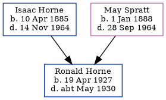

Ronald Leonard Horne 1927 - c1930
[ Home ] | [ Calendar ] | [ Surnames Index ] | [ Errors ] | [ Family History ]The youngest of 7 children of Isaac Horne (a hay trusser & thatcher heavy worker market gardener) and May Spratt, Ronald Horne, the uncle of Nigel Horne, was born in Thanet, Kent, England on 19 Apr 19271,2.
He died in Thanet c. May 19303,4.
Parents
- Isaac was born on 10 Apr 1885
- May was born on 1 Jan 1888
Citations
- England & Wales, Birth Index: 1916-2005 Online publication - Provo, UT, USA: The Generations Network, Inc., 2008.Original data - General Register Office. England and Wales Civil Registration Indexes. London, England: General Register Office. © Crown copyright. Published by permission of the Cont
- Other
- England & Wales deaths 1837-2007 - Findmypast
- England & Wales, Death Index: 1984-2005 Online publication - Provo, UT, USA: The Generations Network, Inc., 2007.Original data - General Register Office. England and Wales Civil Registration Indexes. London, England: General Register Office. © Crown copyright. Published by permission of the Cont
Media
England & Wales births 1837-2006 - BMD/B/1927/2/AZ/000601/116
England & Wales deaths 1837-2007 - BMD/D/1930/2/AZ/000417/091
Family Tree
Map
Generated by ged2site. Last updated on Jul 3, 2024